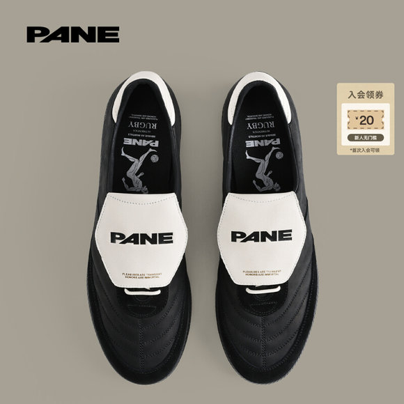
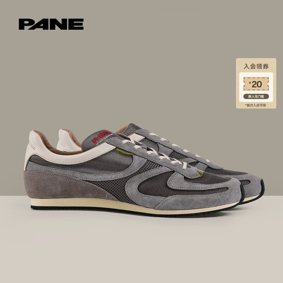
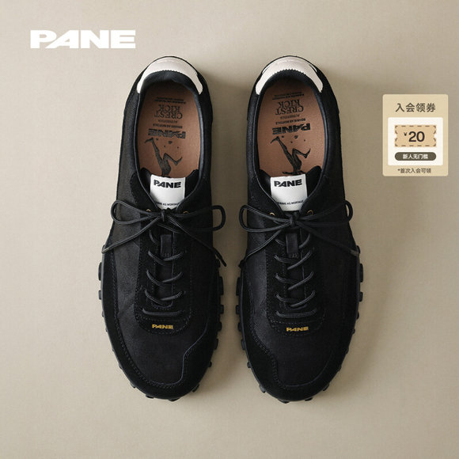
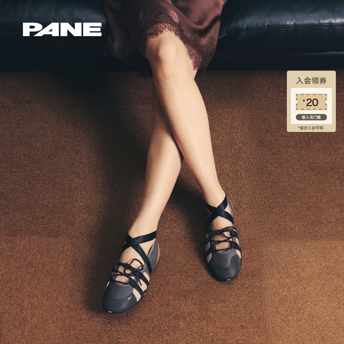

调研日期：2026-05-19
品牌主页：小红书 PANE，小红书号 9478471635
数据口径：小红书登录态前台抓取 + PANE 官网/天猫前台搜索 + 公开报道。小红书互动数、天猫搜索结果、官网价格均为抓取时前台可见信息，不等同于品牌后台 GMV 或全渠道销量。
1. 核心结论
| 结论 | 判断等级 | 证据 |
|---|---|---|
| PANE 更准确的定义是“中国独立鞋履品牌 / 独立品牌”，以复古运动鞋履为核心，正在向生活方式品牌延展。 | 可确认 | 品牌星球称其为 2022 年成立的本土服饰品牌，核心产品为鞋履；赢商网称其为独立品牌并指出“PANE 对自己的定位并非鞋履品牌，而是中国独立品牌”。 |
| 一句话定位：以“复古日常主义”为核心的中国独立鞋履品牌，用薄底、德训/复古跑轮廓、克制设计和线下空间，提供城市通勤与日常穿搭的审美鞋履。 | 可推断 | 官网 About 写“timeless design, purposeful motion, authentic experience”；Laststyle/赢商网均提到复古日常主义、轻训 NO-GI、日常舒适和线下空间。 |
| 当前传播和销售热度最高的产品线是轻训 / 轻训 NO-GI；但无法公开确认单一 SKU 为全渠道销量第一。 | 可确认 + 需后台确认 | Laststyle称轻训为“品牌第一款爆品”，赢商网称轻训为标志性鞋款；小红书官方高互动近期集中在轻训 NO-GI 新色；天猫前台搜索多条轻训/轻训 NO-GI 排在前列。单 SKU GMV 需品牌后台确认。 |
| 小红书传播不是单靠官方号，而是“低粉 KOC 真实试穿 + 鞋履/穿搭内容号 + 品牌科普 + 门店探店 + 竞品对比”的组合。 | 可确认 | 本次 10 组关键词抓取 300 条结果，去重 187 条；高互动 PANE 笔记多来自低粉 KOC，如 7水 17 粉、赢的YIPPY 47 粉、VSecond 50 粉。 |
| 用户讨论度最高的是购买决策问题：好不好穿、尺码/女码、掉跟/不跟脚、和鬼冢虎/足下工业对比、价格与门店库存。 | 可确认 | 27 篇详情页/评论精读，评论样本含 338 条主/子评论；代表笔记 VSecond《鬼冢虎/pane/足下工业》181 评论，亚热带针叶林《想听PANE的真实评价》177 评论。 |
| 可公开确认的最强销售渠道是天猫旗舰店，但无法证明其一定是完整全渠道 GMV 第一。 | 可确认 + 需后台确认 | 赢商网称 PANE 天猫旗舰店 2023 年 9 月开设至今已累积 29.3 万粉丝，并在 2025 年度破亿 GMV、成为复古德训鞋细分赛道第一；Laststyle称 2025 天猫双11设计师鞋靴榜第一。线下/官网/小程序 GMV 无公开对比。 |
2. 老板关心问题逐项回答
2.1 核心产品：图片、定价、卖点、热度信号
| 产品线 / 核心款 | 产品图 | 天猫前台价 | 官网美元价 | 核心卖点 | 热度信号 |
|---|---|---|---|---|---|
轻训 NO-GI Spice Blaze 香料火花 |
¥840 | $180 起 | 德训轮廓；NO-GI 解构无传统内衬；油蜡皮/反毛皮；Ortholite 鞋垫、软木中底。 | 天猫 PANE 搜索官方第 2 位；小红书多篇“轻训 NO-GI”讨论。 |
|
轻训 NO-GI Moonless Night 月黑之夜 |
¥849 | $180 | 编织皮革、黑色复古德训；男女同款尺码 35-45。 | 官方笔记 115 赞/29 收藏/6 评论/73 分享。 | |
轻训 NO-GI Mocha Mousse 摩卡慕斯 |
¥849 | $180 | 编织棕色皮质、复古温度、网纱内里支撑。 | 官方笔记 109 赞/43 收藏/7 评论/108 分享。 | |
轻训 NO-GI Fudge 法奇 |
¥849 | $185 | 金属皮革 + 酒红皮革，视觉更强；官方标注 36-45 发售。 | 官方笔记 91 赞/29 收藏/14 评论/79 分享；评论问“线上上架了吗”。 | |
轻训 Balloon 蓝气球 / Pear Liqueur 梨子酒 |
¥840-880 | $175-180 | 复古薄底德训，日常通勤、百搭。 | 小红书“轻训”是高频系列词；Laststyle称轻训为第一款爆品。 | |
故途 / 故途60 Sandstone / Snow Gravel / Blue Note |
¥820-880 | $165-170 | 早期马拉松鞋/阿甘鞋轮廓，复古跑感，线条轻盈。 | Laststyle称故途为品牌首个系列；天猫前台多条官方在售。 | |
拉格比 Dark Calla Lily / Detective |
 |
¥840 | $170-175 | 翻盖/球鞋复古感，随意优雅。 | Laststyle将 RUGBY 列为六大系列之一。 |
湾岸 / 海岸 Grey Goose / Dash Blue / Ashway / Lichen联名 |
 |
¥820-860 | $165-175 | Riviera Run，复古跑/阿甘鞋，轻便通勤。 | Laststyle称 RIVIERA RUN 为“海岸”；天猫商品名多写“湾岸”。 |
风跃 Bitumen / Mudwater / Panthera Onca / Talus / Plain |
 |
¥840-859 | $175-180 | Crest Kick，户外/徒步/复古运动元素。 | 用户在官方评论问“风跃豹纹38码啥时候上新”。 |
轻影 / 空气芭蕾 Still Form / Relevé / Quiet Core |
 |
¥818-828 | 官网 Aria 系列 | 芭蕾休闲鞋，绑带和轻便女鞋场景。 | withLaura《Effortless is the real luxury》413 赞/139 收藏/45 评论；官方近期多条轻影内容。 |
说明：国内定价取自 2026-05-19 天猫前台搜索 PANE / PANE轻训；美元价取自 PANE 全球官网/Shop App。赢商网概括“热销单品价格集中在 880-980 元”，前台搜索可见部分新款/常规款在 818-880 元，联名款到 940 元。
2.2 销售最多产品：已确认 / 可推断 / 需后台确认
| 层级 | 结论 | 证据 |
|---|---|---|
| 公开报道确认的销售成绩 | PANE 2025 年天猫成交破亿，复古德训鞋细分赛道第一；2025 双11位列设计师鞋靴榜第一。 | 赢商网 2026-05-13；Laststyle 2026-01-12。 |
| 公开报道确认的爆品/标志款 | 轻训系列，尤其轻训 NO-GI，是品牌标志性/爆品线。 | Laststyle称“品牌第一款爆品——轻训系列”；赢商网称“轻训系列是品牌的标志性鞋款”。 |
| 电商平台前台热度 | 天猫前台搜索 PANE 前排多为微风轻训、轻训 NO-GI、轻影、故途；PANE轻训 搜索更集中于轻训/轻训 NO-GI。 |
天猫前台抓取 44 个结果。 |
| 小红书讨论热度 | 轻训/轻训 NO-GI/德训鞋是最高频产品讨论；轻影/空气芭蕾为近期新增声量。 | 官方高互动笔记集中轻训 NO-GI；KOC 高评内容多围绕德训/薄底/轻训。 |
| 需品牌后台确认 | 当前全渠道销量第一的具体 SKU、各渠道 GMV 排名、线下门店单店销量。 | 前台无完整销量字段，不应推断为 GMV 第一。 |
2.3 销量最高渠道：渠道判断与证据
| 渠道 | 角色 | 判断 |
|---|---|---|
| 天猫旗舰店 | 主要成交阵地、官方电商、承接大促与搜索流量。 | 可确认最强公开销售证据：赢商网称天猫旗舰店 2023 年 9 月开设，累积 29.3 万粉丝，2025 年度破亿 GMV；Laststyle称双11设计师鞋靴榜第一。 |
| 官网 / Shopify 全球站 | 海外订单、品牌形象、英文产品叙事、美元价。 | 可确认有完整产品线与门店页面；不能确认中国区 GMV。 |
| 小红书 | 种草、试穿决策、评论答疑、线下引流。 | 高分享/高评论集中于真实试穿、门店排队、竞品对比，不等同成交。 |
| 线下门店 | 试穿体验、目的地打卡、海外游客/“上海特产”传播、品牌资产。 | 官网确认深圳湾、上海永源路、北京三里屯等门店；小红书高分享探店说明线下拉动强。 |
| 买手店/集合店 | 分销与圈层触达。 | 小红书 101FF - U 笔记“PANE 轻训No-Gi 新色抵达”体现集合店上新，但销量不可确认。 |
结论：公开资料只能支持“天猫是最明确的主要销售阵地”，不足以证明完整全渠道 GMV 排名。若老板问“哪个渠道销量最高”，建议对外表述为：天猫旗舰店是目前唯一有公开破亿 GMV 与榜单第一证据的成交主渠道；线下是品牌资产和试穿转化的重要渠道，但单店/全渠道销售需品牌后台确认。
2.4 具体 KOL/KOC 名单与效果
| 分层 | 账号 | 粉丝数 | 代表笔记 | 单条互动 | 传播作用 |
|---|---|---|---|---|---|
| 鞋履/穿搭达人 | 一只小小韩 | 1.7 万 | 《年度9双百搭通勤薄底鞋2.0》 | 1729 赞 / 892 收藏 / 40 评论 / 196 分享 | 把 PANE 放入“通勤薄底鞋/德训鞋”合集，提供横向种草入口。 |
| 鞋履/穿搭达人 | Allen Lee | 3.75 万 | 《Daily shoe｜9双百搭通勤休闲鞋款推荐》 | 693 赞 / 440 收藏 / 13 评论 / 149 分享 | 男性/通勤鞋柜推荐，强化百搭与通勤场景。 |
| 鞋履/穿搭达人 | withLaura | 5.31 万 | 《Effortless is the real luxury》 | 413 赞 / 139 收藏 / 45 评论 / 85 分享 | 推动轻影/空气芭蕾进入松弛感、旅行、生活方式语境。 |
| KOC/真实消费者 | 7水 | 17 | 《5.5的PANE上海TX淮海店 真成上海特产了？》 | 254 赞 / 118 收藏 / 125 评论 / 2125 分享 | 高分享探店，放大“上海特产、老外排队、门店排队”。 |
| KOC/真实消费者 | 赢的YIPPY | 47 | 《最近很火的一个品牌！》 | 1139 赞 / 385 收藏 / 155 评论 / 713 分享 | 低粉爆文，评论集中问“好穿吗/和鬼冢虎比”。 |
| KOC/真实消费者 | VSecond | 50 | 《鬼冢虎/pane/足下工业》 | 495 赞 / 248 收藏 / 181 评论 / 117 分享 | 最强购买决策内容之一，直接对比竞品，指出 PANE 好看柔软但部分配色掉跟。 |
| KOC/真实消费者 | 费嵩宇 | 5600 | 《8开头的PANE…》 | 270 赞 / 74 收藏 / 116 评论 / 118 分享 | 强化“800 多元、配件/开箱体验足”的价格感知。 |
| KOC/真实消费者 | Audreyyy | 77 | 《Pane 是值得被供起来的鞋子》 | 76 赞 / 25 收藏 / 47 评论 / 54 分享 | 尺码风险典型负面样本，官方在评论区回应女码40开发和售后。 |
| KOC/真实消费者 | JoyBtq | 158 | 《PANE的怪码数》 | 6 赞 / 38 收藏 / 31 评论 / 5 分享 | 尺码收藏效率高，说明购买前尺码疑虑强。 |
| KOC/真实消费者 | 九月包包 | 9 | 《pane到底好不好穿》 | 20 赞 / 10 收藏 / 120 评论 / 14 分享 | 低互动但高评论，证明“好不好穿”是强讨论话题。 |
| 探店账号 | 池田真雄 | 42 | 《今天去三里屯终于拔草了PANE》 | 69 赞 / 47 收藏 / 15 评论 / 139 分享 | 北京三里屯试穿与购买决策；评论问价格、磨脚。 |
| 探店/商业观察 | 烦恼全吴 | 88 | 《为什么电商品牌反而把实体店开成了打卡地》 | 76 赞 / 70 收藏 / 0 评论 / 62 分享 | 把 PANE 门店归入电商品牌反向开店/打卡地逻辑。 |
| 品牌科普号 | 每天认识一个品牌 | 4 万 | 《PANE 重构鞋履美学｜每天认识一个新品牌》 | 146 赞 / 89 收藏 / 10 评论 / 278 分享 | 讲品牌来历、复古日常主义、产品线和品牌档案。 |
| 品牌科普号 | 不循BUXUN | 7.22 万 | 《从被问来自哪里到火遍街头PANE是什么来头？》 | 131 赞 / 66 收藏 / 41 评论 / 172 分享 | 将创始人、高定男装背景、NO-GI 和 880 元价格讲清楚。 |
| 官方/关联 | PANE | 4.33 万 | 官方轻训 NO-GI 新色、深圳旗舰店、SS26 成衣 | 最高可见近期单条 139 赞 | 产品发布、视觉档案、发售渠道和尺码承接。 |
| 官方/关联 | PANEroom | 2400 | 《PANE的建筑美学3.0》《时间的容器 Pt.01》 | 31 赞 / 3 收藏 / 6 评论 / 24 分享 | 生活方式和空间内容，记录“PANE生活里的样子”。 |
| 集合店/渠道 | 101FF - U | 87 | 《PANE 轻训No-Gi 新色抵达》 | 44 赞 / 15 收藏 / 6 评论 / 50 分享 | 分销渠道新品到店，评论问颜色和价格。 |
2.5 核心标签词和传播主题
| 类型 | 关键词 |
|---|---|
| 品牌搜索词 | PANE、PANE鞋、pane鞋子、PANEroom、behave_as_mortals |
| 产品系列词 | 轻训、轻训NO-GI、NO_GI、轻影、空气芭蕾、故途、故途60、拉格比、湾岸/海岸、步道、风跃、微风轻训 |
| 鞋型/风格词 | 德训鞋、复古德训鞋、复古运动鞋、薄底鞋、阿甘鞋、复古跑、芭蕾鞋、口袋芭蕾 |
| 穿搭场景词 | 通勤、百搭、男女同款、城市漫步、春夏穿搭、松弛感、上班通勤黑鞋 |
| 竞品对比词 | 鬼冢虎、足下工业、Adidas、WALSH、德训平替/替代 |
| 线下门店词 | PANE上海TX淮海、PANE上海旗舰店、PANE深圳湾、PANE PLAZA、北京三里屯、广州阿那亚、杭州万象城、上海特产 |
| 用户痛点词 | 尺码、码数、偏小、偏大、掉跟、不跟脚、磨脚、压脚趾、足弓、断码、无货、发货、预售、女码40、价格 |
传播主题排序：
- 最近很火的国产复古鞋 / 上海特产 / 老外排队。
- 薄底鞋 / 德训鞋 / 鬼冢虎替代 / 足下工业对比。
- 通勤穿搭 / 男女同款 / 百搭鞋 / 松弛感。
- 门店试穿 / 线下空间 / PANEroom 建筑美学。
- 尺码、掉跟、断码、发货、价格等购买决策问题。
2.6 用户讨论度最高的问题
| 问题 | 代表证据 | 判断 |
|---|---|---|
| 好不好穿 / 舒适度 | 赢的YIPPY评论首问“好穿吗？和鬼冢虎相比哪个好穿啊？”；九月包包《pane到底好不好穿》120 评论。 | 购买意向强，也是转化前最后一问。 |
| 尺码/女码/偏大偏小 | Audreyyy 记录 39 挤脚、40 掉跟；JoyBtq称 39.5 挤、40 大一指；官方回应“女码40正在开发中”。 | 高风险问题，影响退换货与口碑。 |
| 掉跟/不跟脚 | VSecond 明确写“黄色和粉紫色明显掉跟”；评论出现“不跟脚、袜子会往下滑”。 | 产品适配风险，尤其薄底德训/芭蕾鞋型。 |
| 价格 | 费嵩宇《8开头的PANE》评论出现 5/7 开头入手价讨论；集合店/探店评论问“多少钱”。 | 用户接受 800-900 元，但会比较折扣和竞品。 |
| 门店/断码/库存/发货 | 7水上海 TX 排队笔记 2125 分享；潺潺Luna称新款网购要五月底发货、门店灰白无货只剩一双；官方新色评论问线上上架。 | 强需求信号，也可能形成饥饿营销争议。 |
| 竞品比较 | VSecond 同篇比较鬼冢虎/PANE/足下工业；搜索词 PANE鬼冢虎、PANE德训鞋均有高互动内容。 |
是 PANE 种草的关键入口，应主动布局。 |
3. 品牌定位与人群画像
3.1 品牌定位
PANE 不是单纯的“德训鞋品牌”。更准确地说，它是以复古运动鞋履为核心的中国独立品牌，目前正在通过成衣、配饰、线下空间、PANEroom 内容把鞋履品牌升级为生活方式提案。
核心差异化：
| 差异点 | 说明 |
|---|---|
| 复古但不做旧复刻 | 品牌叙事回到 1950-70 年代现代跑鞋雏形期，但强调比例、轻盈和日常适配，而非大 Logo 或厚底潮鞋。 |
| 薄底/德训/阿甘鞋的日常化 | 用户把 PANE 放在德训鞋、薄底通勤鞋、鬼冢虎替代的语境中讨论。 |
| NO-GI 解构 | 轻训 NO-GI 从柔术“无道服”概念出发，减去传统内衬，强调皮革与脚的直接贴合。 |
| 设计师审美 + 诚意定价 | 800-980 元价格带，评论中形成“国产鞋小一千但愿意买”的讨论。 |
| 线下空间能力 | 上海永源路、TX 淮海、北京三里屯、深圳湾等空间让品牌从“鞋”变成“目的地”。 |
3.2 核心人群
| 维度 | 画像 |
|---|---|
| 年龄 | 可推断为 20-35 岁为主，覆盖大学后期、初入职场、都市通勤与潮流穿搭人群。 |
| 城市 | 一线/新一线城市浓度高：上海、北京、深圳、广州、杭州是门店和内容高频城市；上海 TX 淮海、三里屯、深圳湾万象城等商圈强相关。 |
| 性别 | 男女都有，产品标题多为男女同款；小红书女码、芭蕾鞋、男朋友抢鞋、男性通勤鞋柜均出现。比例需后台确认。 |
| 消费能力 | 中高消费力，能接受 800-1000 元国产设计鞋，但会比较折扣、材质和竞品。 |
| 审美偏好 | 复古、克制、薄底、低饱和色、德训/阿甘/芭蕾、松弛通勤、设计师感。 |
| 鞋履需求 | 通勤百搭、城市漫步、轻便、显脚小、男女同款、能替代鬼冢虎/德训鞋。 |
购买或关注动机：
| 动机 | 证据 |
|---|---|
| 替代鬼冢虎/常规德训鞋 | VSecond 直接比较鬼冢虎/PANE/足下工业；PANE鬼冢虎 搜索有高互动结果。 |
| 颜值和配色 | 多条评论称好看、配色在线；官方大量以配色名发布。 |
| 价格相对可接受 | 费嵩宇笔记标题“8开头的PANE”；赢商网称 PANE 重新校准用户对 880 元国产鞋的心理价位。 |
| 门店试穿和打卡 | 7水、池田真雄、PANEroom 建筑美学等内容推动线下引流。 |
| 国产设计师/独立品牌心智 | 科普号用“国产复古鞋”“中国独立品牌”“复古日常主义”讲品牌。 |
4. 产品线、命名与价格带
PANE 的命名逻辑是“系列名 + 配色/主题名”，配色名大量来自自然、日常物、艺术与状态：月黑之夜、摩卡慕斯、香料火花、砂岩、沙漠咖啡、蓝调、潮汐、泥泞、碎岩、银币、原始样本、褪色全息等。它不像传统运动品牌用性能数字命名，而是用“档案感 + 生活诗意”强化审美记忆。
| 系列 | 英文 / 对应 | 价格带 | 主要场景 | 备注 |
|---|---|---|---|---|
| 轻训 | Light Training | ¥840-880 / $175-180 | 德训、薄底、日常通勤 | 品牌第一款爆品/标志线。 |
| 轻训 NO-GI | Light Training NO-GI | ¥840-880，联名 ¥940 / $180-190 | 德训升级、软皮、直接贴合 | 目前小红书讨论最高的产品线。 |
| 故途 / 故途60 | Pace Nostalgia / Pace Nostalgia 60 | ¥820-880 / $165-170 | 复古跑、阿甘鞋 | 品牌首个系列，以早期马拉松鞋为灵感。 |
| 拉格比 | Rugby | ¥840 / $170-175 | 翻盖复古、随意优雅 | Laststyle列为六大系列之一。 |
| 湾岸 / 海岸 | Riviera Run | ¥820-860 / $165-175 | 复古跑、城市步行 | 公开资料对中文名有“海岸/湾岸”两种写法。 |
| 步道 | Aisle | 未在本次天猫前 44 官方结果中确认 | 城市步行/户外感 | Laststyle/赢商网列为历史/现有产品线，当前在售需后台确认。 |
| 风跃 | Crest Kick | ¥840-859 / $175-180 | 复古户外、徒步感 | 天猫前台风跃系列多款在售。 |
| 微风轻训 | Zephyr Training | ¥820-880 / $165-175 | 口袋芭蕾德训、男女休闲 | 天猫搜索前排较多。 |
| 轻影 | Aria | ¥818-828 | 芭蕾休闲/女鞋 | 2026 新款声量增加。 |
5. 小红书传播策略
| 打法 | 代表内容 | 解决的问题 |
|---|---|---|
| KOC 真实试穿 | 赢的YIPPY、VSecond、Audreyyy、JoyBtq、Kenny | 降低“国产 800+ 鞋值不值”的不确定性，触发评论区问尺码/舒适度/竞品。 |
| 鞋履/穿搭达人合集 | 一只小小韩、Allen Lee、withLaura | 把 PANE 放入通勤薄底鞋、百搭鞋、松弛感穿搭，扩大非品牌搜索人群。 |
| 品牌科普号 | 每天认识一个品牌、不循BUXUN | 讲清品牌来历、创始背景、复古日常主义、为何火。 |
| 门店探店 | 7水、池田真雄、商业观察号、PANEroom | 导入线下试穿，制造“排队/上海特产/老外买”的社交货币。 |
| 竞品对比 | VSecond、PANE鬼冢虎 相关搜索结果 |
直接进入购买决策，回答“PANE vs 鬼冢虎/足下工业”。 |
| 官方视觉档案 | PANE 官方、PANEroom | 建立品牌审美、产品发售、空间资产和生活方式氛围。 |
6. KOL/KOC 明细表
重点结论：PANE 的高效传播不依赖大粉博主。7水、赢的YIPPY、VSecond、JoyBtq、九月包包等账号粉丝极低，但评论和分享很高，说明平台用户对“真实评价 + 消费决策”高度敏感。
| 账号 | 类型 | 粉丝数 | 代表笔记 | 点赞 | 收藏 | 评论 | 分享 | 传播贡献 |
|---|---|---|---|---|---|---|---|---|
| 7水 | KOC/探店 | 17 | 5.5的PANE上海TX淮海店 真成上海特产了？ | 254 | 118 | 125 | 2125 | 最高分享，线下排队和“上海特产”破圈。 |
| 赢的YIPPY | KOC/种草 | 47 | 最近很火的一个品牌！ | 1139 | 385 | 155 | 713 | 低粉爆文，评论集中购买决策。 |
| VSecond | KOC/测评 | 50 | 鬼冢虎/pane/足下工业 | 495 | 248 | 181 | 117 | 竞品对比最强样本。 |
| 一只小小韩 | 鞋履穿搭 | 1.7 万 | 年度9双百搭通勤薄底鞋2.0 | 1729 | 892 | 40 | 196 | 薄底鞋合集中给 PANE 背书。 |
| Allen Lee | 鞋履穿搭 | 3.75 万 | Daily shoe｜9双百搭通勤休闲鞋款推荐 | 693 | 440 | 13 | 149 | 男性通勤鞋柜推荐。 |
| withLaura | 穿搭/生活方式 | 5.31 万 | Effortless is the real luxury | 413 | 139 | 45 | 85 | 轻影/空气芭蕾生活方式化。 |
| 每天认识一个品牌 | 品牌科普 | 4 万 | PANE 重构鞋履美学 | 146 | 89 | 10 | 278 | 建立品牌档案。 |
| 不循BUXUN | 品牌科普 | 7.22 万 | 从被问来自哪里到火遍街头PANE是什么来头？ | 131 | 66 | 41 | 172 | 讲清 NO-GI、创始人、价格和门店。 |
| 费嵩宇 | KOC/开箱 | 5600 | 8开头的PANE… | 270 | 74 | 116 | 118 | 价格与开箱仪式感。 |
| Audreyyy | KOC/负面真实反馈 | 77 | Pane 是值得被供起来的鞋子 | 76 | 25 | 47 | 54 | 尺码/退换货风险样本，官方下场回应。 |
| JoyBtq | KOC/尺码 | 158 | PANE的怪码数 | 6 | 38 | 31 | 5 | 收藏高于点赞，尺码决策价值强。 |
| 九月包包 | KOC/提问 | 9 | pane到底好不好穿 | 20 | 10 | 120 | 14 | 用提问激发真实反馈。 |
| 池田真雄 | 探店/消费 | 42 | 今天去三里屯终于拔草了PANE | 69 | 47 | 15 | 139 | 三里屯线下引流。 |
| 101FF - U | 集合店/渠道 | 87 | PANE 轻训No-Gi 新色抵达 | 44 | 15 | 6 | 50 | 新品到店和分销渠道信号。 |
7. 用户评论与讨论洞察
7.1 购买意向
| 评论/问题类型 | 代表内容概括 | 含义 |
|---|---|---|
| 问价格 | “多少钱这双”“绿色啥价格”“8开头/7开头/5开头” | 对 800+ 有认知，但会寻找折扣。 |
| 问鞋型/款式 | “这是哪个款”“最推荐哪一双” | 需要官方和达人强化款式识别。 |
| 问门店/上架 | “线上上架了吗”“没有上架啊”“白色只剩一双” | 库存稀缺带来行动力，也带来焦虑。 |
| 问通勤/旅游 | “适合旅游日行2w步吗”“正常上下班不磨脚” | 购买场景非常明确。 |
7.2 阻力与风险
| 阻力 | 代表样本 | 风险 |
|---|---|---|
| 尺码不稳定 | 39.5 挤、40 大；女码 40 开发中；半码差异被吐槽。 | 高退换货、高客服成本，影响复购。 |
| 掉跟/不跟脚 | VSecond称部分配色明显掉跟；评论称袜子往下滑。 | 薄底德训/芭蕾鞋适配风险。 |
| 舒适度两极化 | 有人称 25000 步没问题，也有人称硬、压脚趾、足弓无支撑。 | 需要脚型分层推荐，不能只说“好穿”。 |
| 断码/无货/预售 | 新款网购要等月底、门店只剩一双、经典款曾断码。 | 稀缺能种草，也会被解读为饥饿营销。 |
| 产品/营销落差 | 评论称“营销比产品好”；也有脱色、细节糙的反馈。 | 品牌声量上升后，负面会被放大。 |
7.3 品牌方可做的评论区动作
- 官方号增加“脚型/尺码选择指南”：窄脚、宽脚、高脚背、扁平足、女码 39-40、男码换算单独说明。
- 每个核心系列固定一条“是否掉跟/如何选码/适合走路多久”的置顶笔记。
- 门店笔记增加实时库存或可试穿范围，降低“跑空”和抢货负面。
- 竞品对比可由第三方 KOC 做，官方负责补材料、结构、售后和选码。
8. 渠道与销售线索
| 渠道 | 可确认事实 | 对传播/销售的作用 |
|---|---|---|
| 天猫旗舰店 | 公开报道：2023 年 9 月开设，29.3 万粉丝，2025 年 GMV 破亿，复古德训鞋细分赛道第一。 | 主要成交阵地、榜单背书、大促转化。 |
| 全球官网 | 官网在售 Men/Women 多条产品线，Light Training NO-GI $180-190，提供海外配送和门店信息。 | 海外消费者承接、品牌形象、国际化。 |
| 小红书 | 官方 4.33 万粉、获赞收藏 9.36 万；PANEroom 2400 粉、获赞收藏 8500。 | 种草、试穿反馈、门店引流、口碑沉淀。 |
| 线下旗舰店 | 官网列出深圳湾、上海永源路、北京三里屯等旗舰店；PANEroom/探店内容强化空间。 | 试穿、打卡、品牌体验、海外游客。 |
| 线下零售/快闪 | 上海淮海、广州阿那亚、深圳前海、杭州等空间被公开报道提及。 | 快速城市扩张和圈层触达。 |
| 集合店/买手店 | 小红书可见 101FF 等渠道上新笔记。 | 局部城市/圈层分销，不可确认 GMV。 |
9. 风险与建议
| 风险 | 说明 | 建议 |
|---|---|---|
| 尺码与脚型适配风险 | 当前评论区最影响购买决策，尤其女码、半码、掉跟。 | 做系列级尺码表 + 脚型指南 + 评论区客服 SOP；邀请高评论 KOC 做脚型复测。 |
| “好看但不好走”口碑分化 | 舒适度两极化会抵消高颜值种草。 | 把“适合场景”讲细：通勤/短途/长走/宽脚/足弓支撑，不要统一宣传“暴走”。 |
| 断码/排队带来的负面 | 排队有传播价值，但跑空、预售和女码无货会形成阻力。 | 门店库存/线上发售时间透明化，热门款预约试穿。 |
| 价格敏感与竞品替代 | 800-980 元价位需要持续解释材料、工艺和售后。 | 强化“材料/工艺/鞋垫/软木中底/多鞋带/包装”的价值说明。 |
| 官方号过度审美化 | 官方视觉强，但用户最问的是尺码、价格、库存和脚感。 | 主账号增加实用笔记；PANEroom 继续负责生活方式影像。 |
| 仿品/低价店铺混杂 | 天猫搜索出现非官方店铺低价 PANE 标题。 | 官方笔记和天猫店铺显著提示正品渠道，防止用户误买。 |
10. 数据来源和样本口径
10.1 小红书样本
| 项目 | 数量 / 说明 |
|---|---|
| 官方主页 | PANE 官方主页 60 条前台笔记；PANEroom 60 条前台笔记。 |
| 关键词搜索 | 10 个关键词，每词 30 条，共 300 条原始结果。 |
| 去重笔记 | 187 条。 |
| 详情页/评论精读 | 27 篇成功详情页；评论样本含 338 条主评论/子评论文本。 |
| 关键词 | PANE、PANE鞋、PANE轻训、PANE德训鞋、PANE鬼冢虎、PANE薄底鞋、PANE门店、PANEroom、PANE尺码、PANE掉跟。 |
| 抓取时间 | 2026-05-19 20:16-20:36 左右。 |
10.2 小红书账号资产
| 账号 | 小红书号/简介 | 粉丝 | 获赞收藏 | 内容角色 |
|---|---|---|---|---|
| PANE | 9478471635；“Behave as mortals 瞬逝、优雅、凡常。”；简介关联 @PANEroom |
4.33 万 | 9.36 万 | 产品发布、发售、视觉档案、门店。 |
| PANEroom | 11520357771；“记录@PANE生活里的样子” |
2400 | 8500 | 生活方式、空间、建筑美学、日常影像。 |
10.3 公开资料
| 来源 | 关键事实 | 链接 |
|---|---|---|
| PANE 官网 About | 品牌自述：timeless design、purposeful motion、authentic experience；重视 enduring style、real comfort、detail/proportion/wearability。 | https://paneshoes.com/pages/about |
| PANE 官网 Stores | 深圳湾、上海永源路、北京三里屯、上海淮海、广州阿那亚、深圳前海、杭州等门店/空间。 | https://paneshoes.com/pages/stores-list |
| PANE 官网产品页 | Light Training NO-GI $180；NO-GI 解构、油蜡皮/反毛皮、Ortholite、软木中底、轻量橡胶底。 | https://paneshoes.com/products/pane-light-training-nogi-men-s-shoes-verse |
| BrandStar | PANE 成立于 2022 年，上海，本土服饰品牌；核心产品为鞋履，有故途、轻训、步道等系列。 | https://www.brandstar.com.cn/navigation/3248 |
| Laststyle | 线上超 13.7 万忠实用户；2025 天猫双11设计师鞋靴榜第一；列出轻训、故途、拉格比、海岸、步道、风跃六大系列；轻训为第一款爆品。 | https://www.laststylebrand.com/article/463 |
| 赢商网 | 2025 年天猫成交破亿，复古德训鞋细分赛道第一；天猫旗舰店 29.3 万粉；热销价格 880-980 元；线下北上广深布局。 | https://m.winshang.com/news740127.html |
| 天猫前台搜索 | PANE / PANE轻训 搜索可见官方店多款产品，价格 ¥818-940，常规鞋款多在 ¥820-880。 |
本地抓取文件：/Users/huangdong/Downloads/codex-xhs10/data_xhs/taobao_search_pane_tmall.json |
10.4 不能公开确认的内容
- 不能确认 PANE 当前全渠道销量第一 SKU。
- 不能确认天猫、线下、官网、小程序之间的完整 GMV 排名。
- 不能确认小红书内容是否全部为自然流量或商业合作，除非笔记明确标注。
- 不能确认用户性别/年龄比例，只能从内容、评论和产品尺码进行推断。
- 不能把小红书互动量、天猫搜索排序、官网售罄状态直接等同于销量。